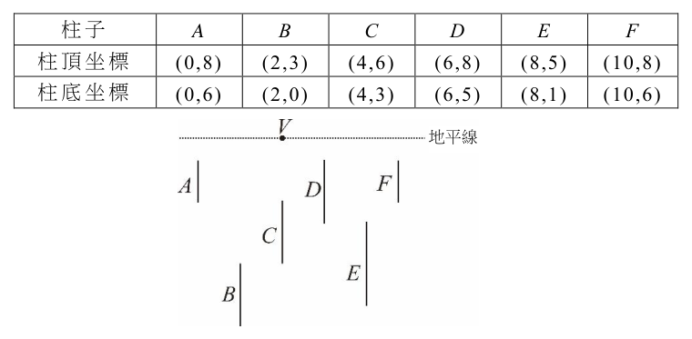
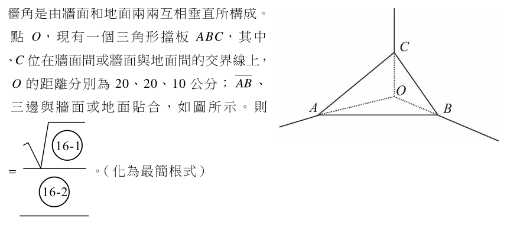

開卷有益 ／
學科能力測驗 ／ 數學B ／ 114 年114 年學科能力測驗數學B試題與答案
這一頁是民國 114 年學科能力測驗數學B的整份歷屆試題，共 20 題，題目與標準答案出自大考中心 學測歷年試題（依著作權法 §9，考試試題不受著作權保護），其中 20 題附有詳解。以下逐題列出題幹、選項與答案；要計時作答或記錄成績，請用線上練習。
線上作答這一科 →
全部 20 題
第 1 題
設數線上有一點 \(P\) 滿足 \(P\) 到 1 的距離加上 \(P\) 到 4 的距離等於 4。試問這樣的 \(P\) 有幾個？
（A） 0 個（B） 1 個（C） 2 個（D） 3 個（E） 無限多個答案：（C）
詳解與考點 正解：題幹是兩定點距離和，先把 P 的坐標設為 x，利用絕對值分區討論。條件為 |x-1|+|x-4|=4。當 1≤x≤4 時，|x-1|+|x-4|=(x-1)+(4-x)=3，不等於 4，因此區間內無解。當 x>4 時，(x-1)+(x-4)=4，2x-5=4，2x=9，x=4.5，符合 x>4。當 x<1 時，(1-x)+(4-x)=4，5-2x=4，-2x=-1，x=0.5，符合 x<1。共有 2 個 P，故 C 為正解。
A：左、右區間各可解出一點，不是 0 個。
B：只算到一側的 x=4.5 或 x=0.5，漏掉另一側的對稱情形。
D：1 到 4 之間距離和恆為 3，不能再提供第 3 個解。它看起來對，是因為容易誤以為兩定點之間的點也會使距離和隨位置改變。
E：距離和在區間內固定為 3，區間外各只有一個一次方程式解，故非無限多個。
本題考點：數線絕對值距離——先依定點位置分成 x<1、1≤x≤4、x>4；兩定點間的距離和恆等於兩定點距離，目標值較大時解只會落在區間外。
第 2 題
設 \(A\) 為 \(3\times 2\) 階矩陣，且 \(A\begin{bmatrix}1 & 0 \\ -1 & 1\end{bmatrix}=\begin{bmatrix}-2 & 1 \\ 3 & 5\end{bmatrix}\)。若 \(A\begin{bmatrix}1 \\ 0\end{bmatrix}=\begin{bmatrix}b \\ c\end{bmatrix}\)，試問 \(a+b+c\) 之值為何？
（A） 0（B） 2（C） 4（D） 5（E） 8答案：（D）
詳解與考點 正解：右乘的矩陣會把 A 的兩個直行作線性組合，應先由乘積的第二直行還原 A 的第二直行，再由第一直行還原 A 的第一直行。設 A 的第一、第二直行分別為 u、v，則 A 乘上直行 [1,-1] 得 u-v，乘上直行 [0,1] 得 v。因此 u-v=(4,-2,3)，v=(-6,1,5)。逐項相加得 u=(4,-2,3)+(-6,1,5)=(-2,-1,8)，所以 a=-2、b=-1、c=8。a+b+c=-2+(-1)+8=5，故 D 為正解。
A：若把乘積第一直行的第三個分量 3 誤當成 c，會算成 -2+(-1)+3=0；但 c 應由 u 的第三個分量 3+5=8 得到。
B：若把 A 第二直行的第三個分量 5 誤當成 c，會算成 -2+(-1)+5=2；但 5 是 v 的分量，還須加上 u-v 的分量 3，所以 c=8。
C：4 是乘積第一直行的第一個分量，即 a-(-6)=4，不是 a+b+c；完整加總為 -2+(-1)+8=5。
E：8 只是 c 的值；把 a=-2 與 b=-1 漏掉才會選 8，完整加總仍為 5。
本題考點：矩陣乘法——乘積的每一直行是 A 各直行的線性組合；直行還原判準——先由 v=(-6,1,5)，再用 u=(u-v)+v，最後加總 u 的三個分量。
第 3 題
已知實數 \(a, b\) 滿足 \(\dfrac{1}{2} < a < 1\) 及 \(1 < b < 2\)。試問下列哪個選項的值最小？
（A） \(0\)（B） \(\log a\)（C） \(\log(a^2)\)（D） \(\log b\)（E） \(\dfrac{1}{\log b}\)答案：（C）
詳解與考點 正解：本題要比較對數的大小，關鍵是先用 0<a<1 時 log a<0，再用 log(a²)=2log a；平方後的對數把負值加倍，因此選 C。由 1/2<a<1，得 log(1/2)＜log a<log 1，即 -0.301<log a<0。再算 log(a²)=2log a，所以 -0.602<log(a²)＜0；同一個負數乘以 2 後更小，故 log(a²)＜log a。
A：0 大於 log a 與 log(a²) 這兩個負數，不可能最小，A 錯誤。
B：log a 雖為負數，但 log(a²)=2log a<log a，B 錯誤。它看起來對，是因為只比較正負時會先注意到 log a 為負，卻漏掉平方使其值加倍為更小的負數。
D：由 1<b<2，得 0<log b<log 2=0.301，log b 為正數，大於兩個負數，D 錯誤。
E：0<log b<0.301，取倒數後 1/log b>1/0.301≈3.32，仍為正數，不可能最小，E 錯誤。
本題考點：常用對數的正負——0<x<1 時 log x<0，x>1 時 log x>0；對數冪次公式——log(a²)=2log a，負數乘以 2 會更小；比較判準——先分正負，再比較負值的大小。
第 4 題
某商店推出抽獎活動，提供香蕉、鳳梨、蘋果、橘子四種不同款式的水果公仔當獎品。每次抽獎可得1個公仔，且每種款式被抽中的機率皆相等。某甲決定抽獎四次，試問他恰抽到三種不同款式公仔的機率為何？
（A） \(\dfrac{5}{16}\)（B） \(\dfrac{3}{8}\)（C） \(\dfrac{1}{2}\)（D） \(\dfrac{9}{16}\)（E） \(\dfrac{5}{8}\)答案：（D）
詳解與考點 正解：抽 4 次而恰好抽到 3 種不同款式，代表這 4 個結果中各款式的出現次數必為 2、1、1，因此採「先選款式，再排位置」的計數法最直接。先從香蕉、鳳梨、蘋果、橘子這 4 種中選出實際出現的 3 種，有 C(4,3)=4 種。固定這 3 種之後，選其中哪 1 種出現 2 次，有 3 種；再從 4 個抽獎位置中選 2 個給它，有 C(4,2)=6 種；剩下 2 種各占剩下的 2 個位置，有 2!=2 種。故有利結果數為 4×3×6×2=144。每次抽獎有 4 種等機率結果，樣本數為 4^4=256，所求機率為 144/256=9/16，故 D 為正解。
A：5/16=80/256，遠少於 144/256，來自未完整計入「選哪 3 種款式」或「重複款式占哪 2 個位置」的組合數，A 錯誤。
B：3/8=96/256，來自漏算 2、1、1 這組次數在 4 個位置上的排列方式，B 錯誤。
C：1/2=128/256，與 144 個有利結果不符，C 錯誤。
E：5/8=160/256，多於 144/256，來自把兩個各只出現 1 次的款式重複計數，E 錯誤。它看起來對，是因為它與正確值同樣落在一半以上，分辨關鍵在有利結果須用 4×3×6×2 精確算出，不能以概略比例估計。
本題考點：等機率樣本數——每次有 4 種選擇、共抽 4 次，樣本數為 4^4；次數分配判定——4 次抽獎恰得 3 種款式時，各款式出現次數只能是 2、1、1；乘法原理計數——依序決定出現的款式、重複的款式與各款式所占位置，最後以有利結果除以樣本數得機率。
第 5 題
空間中有兩相交直線 \(L, M\)，其夾角為 \(24^\circ\)。將 \(M\) 繞著 \(L\) 轉一圈，可得一個直圓錐面。今有平面 \(E\) 與直線 \(L\) 平行，試問平面 \(E\) 與此直圓錐面的截痕是下列哪一個選項？
（A） 雙曲線（B） 拋物線（C） 橢圓（長短軸不相等）（D） 圓（E） 兩相交直線答案：（A）
詳解與考點 正解：題幹明示平面 E 與圓錐軸 L 平行，判斷圓錐曲線時應比較截平面與軸、母線的關係。母線 M 與軸 L 的半頂角為 24°。平面 E 平行於軸 L，截平面與軸的夾角為 0°，且不通過頂點時會切到圓錐的上下兩葉，因此截痕為雙曲線，A 為正解。
B：拋物線須截平面恰與某一條母線平行；本題平行的是軸 L，不是母線 M。
C：橢圓的截平面與軸夾角須大於半頂角 24°，本題夾角為 0°。
D：圓是截平面垂直於軸時的特殊橢圓，本題平面反而平行於軸。
E：兩相交直線須截平面通過圓錐頂點；題幹只說平行於 L，不能據此判為通過頂點。
本題考點：圓錐截面判別——截平面平行軸且不過頂點得雙曲線；平行母線得拋物線；與軸夾角大於半頂角得橢圓，垂直軸時為圓。
第 6 題
設 \(a,b,c\) 為實數，且多項式 \(f(x)=a(x-1)(x-3)+b(x-1)(x-4)+c(x-3)(x-4)\) 經化簡後，得 \(f(x)=x^2\)。有關 \(a,b,c\) 的大小關係，試選出正確的選項。
（A） \(a>b>c\)（B） \(a>c>b\)（C） \(b>c>a\)（D） \(c>a>b\)（E） \(c>b>a\)答案：（B）
詳解與考點 正解：f(x)=a(x-1)(x-3)+b(x-1)(x-4)+c(x-3)(x-4)=x² 是恆等式；應代入使兩項因式為 0 的 x 值，逐一求出係數。代入 x=1：f(1)=1²=1，前兩項含 (x-1) 為 0，只剩 c(1-3)(1-4)=c(－2)(－3)=6c，所以 6c=1，c=1/6。代入 x=4：f(4)=4²=16，後兩項含 (x-4) 為 0，只剩 a(4-1)(4-3)=a×3×1=3a，所以 3a=16，a=16/3。代入 x=3：f(3)=3²=9，第一、三項含 (x-3) 為 0，只剩 b(3-1)(3-4)=b×2×(－1)=－2b，所以 －2b=9，b=－9/2。比較 16/3>1/6＞－9/2，得 a>c>b，故 B 為正解。
A：a>b>c 不成立，因 b=－9/2<c=1/6。
C：b>c>a 不成立，a=16/3 是三者最大。
D：c>a>b 不成立，c=1/6<a=16/3。
E：c>b>a 不成立，b=－9/2<a=16/3。
本題考點：多項式恆等式代入法——選 x=1、3、4 使兩項為 0，可逐一留下 c、b、a；代入判準——代入後右邊仍須算 f(x)=x²，例如 x=3 時為 9，不可誤寫為 0。
第 7 題
某人使用單點透視法，以地平線上一點為消失點，將地平面上的六根鉛直柱子 \(A, B, C, D, E, F\) 畫在坐標平面上，各柱柱頂與柱底的坐標如下表，並且讓點 \(V(4,9)\) 代表消失點，如圖所示。\n因圖形中 \(A\)、\(F\) 兩柱的柱底連線與柱頂連線均平行於地平線，故 \(A\)、\(F\) 兩柱的實際高度相等。根據上述，試選出實際高度最大的柱子。

各柱柱頂與柱底的坐標 柱子 A B C D E F 柱頂坐標 (0,8) (2,3) (4,6) (6,8) (8,5) (10,8) 柱底坐標 (0,6) (2,0) (4,3) (6,5) (8,1) (10,6)
（A） \(A\)（B） \(B\)（C） \(C\)（D） \(D\)（E） \(E\)答案：（D）
詳解與考點 正解：本題不能只比畫面上的柱高，題幹給定消失點 V(4,9)，須用單點透視的相似三角形將畫面高度還原。設柱底為(x,y底)、柱頂為(x,y頂)，柱底到地平線的畫面深度為9-y底，實際高度比例 H∝(y頂-y底)／(9-y底)。先用題幹提示驗證：A 的比例=(8-6)／(9-6)=2/3；F 的比例=(8-6)／(9-6)=2/3，兩者相等，符合 A、F 實際等高。D：(8-5)／(9-5)=3/4=0.75；A：(8-6)／(9-6)=2/3≈0.667；B：(3-0)／(9-0)=3/9=1/3≈0.333；C：(6-3)／(9-3)=3/6=1/2=0.5；E：(5-1)／(9-1)=4/8=1/2=0.5；F=2/3≈0.667。故 D(0.75)>A=F(0.667)>C=E(0.5)>B(0.333)，D 為實際高度最大的柱子，故 D 為正解。
A：A 的還原高度比例為2/3≈0.667，小於 D 的3/4=0.75，A 錯誤。
B：B 的還原高度比例為3/9=1/3≈0.333，是各柱中最小，B 錯誤。
C：C 的還原高度比例為3/6=1/2=0.5，小於 D 的3/4，C 錯誤。
E：E 的還原高度比例為4/8=1/2=0.5，小於 D 的3/4，E 錯誤。它看起來對，是因為 E 的畫面視高為5-1=4，大於 D 的8-5=3；但 E 的柱底距地平線9-1=8，縮放較大，還原後只有1/2。
本題考點：單點透視還原——以消失點所在的地平線求柱底畫面深度，再算實際高度比例＝視高／畫面深度；相似三角形判準——柱底越接近地平線，畫面縮放越大，不能直接比較柱頂與柱底的y座標差；驗證方法——題幹已知等高的 A、F 代入比例相等，即可檢核公式。
第 8 題 （多選）
設 \( \Gamma \) 為坐標平面上函數 \( y = x^3 - x \) 的圖形。試選出正確的選項。
（A） \( \Gamma \) 的對稱中心為原點（B） \( \Gamma \) 在 \( x = 0 \) 附近會近似於直線 \( y = x \)（C） \( \Gamma \) 經適當平移後可與函數 \( y = x^3 + x + 3 \) 的圖形重合（D） \( \Gamma \) 與函數 \( y = x^3 + x \) 的圖形對稱於 \( x \) 軸（E） \( \Gamma \) 與函數 \( y = -x^3 + x \) 的圖形對稱於 \( y \) 軸答案：（A）（E）
詳解與考點 正解：函數 f(x)=x³-x 的關鍵是奇函數與原點附近的切線。A：f(-x)=(-x)³-(-x)=-x³+x=-(x³-x)=-f(x)，所以圖形對稱中心為原點，正確。E：對 y 軸的對稱圖形為 y=f(-x)=-x³+x，正是選項函數，正確。
B：f'(x)=3x²-1，f'(0)=-1；過 (0,f(0))=(0,0) 的切線為 y=-x，所以 x=0 附近近似 y=-x，不是 y=x，錯誤。
C：平移 y=x³-x 的圖形，三次項係數仍為 1，但平移後的一次項係數仍可由展開判定；若令 (x-h)³-(x-h)+k=x³+x+3，x² 項為 -3h，故 h=0，則一次項仍為 -1，不可能變成 +1，錯誤。
D：對 x 軸對稱應為 y=-f(x)=-x³+x，不是 y=x³+x，錯誤。它看起來對，是因為兩式都含 x³ 與 x，卻忽略對稱必須每一項都變號。
本題考點：奇函數判準——f(-x)=-f(x) 時圖形對稱於原點；局部線性化——x=0 附近用切線 y=f(0)+f'(0)x 判斷；圖形對稱——對 x 軸取 -f(x)，對 y 軸取 f(-x)。
第 9 題 （多選）
坐標平面上設 \(O\) 為原點，且 \(P\) 點坐標為 \((2,2)\)。已知向量 \(\overrightarrow{OP}=\alpha\overrightarrow{OA}+\beta\overrightarrow{OB}\)，其中實數 \(\alpha,\beta\) 滿足 \(0\le\alpha\le1\)，\(0\le\beta\le1\)。下列選項中，試選出可能的 \(A\)、\(B\) 點坐標。
（A） \(A(2,-3)\)、\(B(-4,3)\)（B） \(A(3,2)\)、\(B(3,4)\)（C） \(A(3,4)\)、\(B(4,-1)\)（D） \(A(1,2)\)、\(B(2,1)\)（E） \(A(1,-1)\)、\(B(1,1)\)答案：（B）（C）（D）
詳解與考點 正解：題幹給 OP=(2，2)=αOA+βOB，且 0≤α≤1、0≤β≤1；每個選項都要把 A、B 坐標代入兩個分量方程，解出 α、β 檢查是否都在 [0，1]。B：A(3，2)、B(3，4)，所以 3α+3β=2、2α+4β=2。第一式除以 3 得 α+β=2/3；第二式除以 2 得 α+2β=1。相減得 β=1/3，代回得 α=1/3，皆在 [0，1]，B 正確。C：A(3，4)、B(4，-1)，所以 3α+4β=2、4α-β=2。由第二式 β=4α-2，代入第一式：3α+4(4α-2)=2，3α+16α-8=2，19α=10，α=10/19；β=40/19-2=2/19，皆在 [0，1]，C 正確。D：A(1，2)、B(2，1)，所以 α+2β=2、2α+β=2。第一式乘 2 得 2α+4β=4，減第二式得 3β=2，β=2/3；代回 α=2-2×(2/3)=2/3，皆在 [0，1]，D 正確。
A：A(2，-3)、B(-4，3)，所以 2α-4β=2、-3α+3β=2。第一式除以 2 得 α-2β=1；第二式除以 3 得 -α+β=2/3。相加得 -β=5/3，β=-5/3<0；不在 [0，1]，A 錯誤。
E：A(1，-1)、B(1，1)，所以 α+β=2、-α+β=2。兩式相加得 2β=4，β=2>1；再得 α=0，不符 β≤1，E 錯誤。
本題考點：向量線性組合——將坐標向量拆成 x、y 分量的聯立方程；係數範圍——解出 α、β 後必逐一檢查 0≤α≤1、0≤β≤1，任一超界即不可行。
第 10 題 （多選）
某羽球選手與甲、乙、丙、丁四位選手各比賽一場。賽後蒐集這四場比賽的數據，統計該選手的對手在比賽中殺球的總次數，以及每次殺球用時的平均及標準差，結果如下表所示。例如對手甲在該場殺球次數為 25 次、每次殺球用時平均 1.2 秒，每次殺球用時標準差 0.5 秒。根據上述，對於甲、乙、丙、丁四位選手的表現，試選出正確的選項。
四位對手殺球次數與用時統計 對手 該場殺球次數 每次殺球用時平均（秒） 每次殺球用時標準差（秒） 甲 25 1.2 0.5 乙 14 1.5 0.3 丙 20 1.7 0.2 丁 30 1.2 0.4
（A） 丙在該場中每次殺球用時平均是四位中最多的（B） 丁在該場中花在殺球的總用時是四位中最多的（C） 甲在該場中每次殺球的用時都與丁相同（D） 甲在該場中每次殺球用時的全距，大於丁在該場中每次殺球用時的全距（E） 乙在該場中各次殺球的用時不可能都在 1.4 到 1.6 秒之間答案：（A）（B）（E）
詳解與考點 正解：題幹給的是各選手殺球次數、每次用時平均與標準差，判斷平均、總用時與資料分散情形時須分別使用對應統計量。資料為甲（25，1.2，0.5）、乙（14，1.5，0.3）、丙（20，1.7，0.2）、丁（30，1.2，0.4）。A：四人的平均用時依序為 1.2、1.5、1.7、1.2 秒，丙的 1.7 秒最大，正確。B：總用時＝次數×平均用時；甲為 25×1.2=30 秒，乙為 14×1.5=21 秒，丙為 20×1.7=34 秒，丁為 30×1.2=36 秒，丁最多，正確。E：若乙的 14 次用時都在 1.4 到 1.6 秒之間，平均為 1.5 秒時，每筆資料與平均數的距離至多 0.1 秒，標準差至多 0.1 秒；但題給標準差為 0.3 秒，矛盾，故不可能都在此區間，正確。
C：甲、丁的平均同為 1.2 秒，只代表各自的平均相同；甲的標準差 0.5、丁的標準差 0.4 已不同，不能推出每次殺球用時都相同。
D：標準差 0.5 大於 0.4，僅表示甲的資料以標準差衡量較分散；全距是最大值減最小值，不能只由標準差大小判定。它看起來對，是因為兩者都描述離散程度，卻是不同的統計量。
本題考點：平均數與總量——總用時＝次數×平均每次用時；標準差判讀——標準差描述資料相對平均數的離散，不能直接推出每筆資料或全距；區間檢驗——資料全落在平均數兩側 0.1 的區間時，標準差不會超過 0.1。
第 11 題 （多選）
設地球是一個球體。地球表面上五個點 \(A\)、\(B\)、\(C\)、\(D\)、\(E\) 的經緯度如下表，例如 \(A\) 點位在經度 0 度，北緯 60 度。大圓為通過球心的平面與球面相交所形成的圓，且球面上相異兩點在大圓上所形成較小的弧為最短路徑。根據上述，試選出正確的選項。
五個點 A、B、C、D、E 的經緯度 位置 經度 0 度 經度 180 度 北緯 60 度 A B 北緯 30 度 C D 緯度 0 度 E
（A） 「北極點到 \(A\) 的最短路徑長」等於「北極點到 \(B\) 的最短路徑長」（B） 「\(A\) 到 \(B\) 的最短路徑長」等於「\(C\) 到 \(D\) 的最短路徑長」（C） \(A\) 到 \(E\) 的最短路徑必經過 \(C\)（D） \(C\) 到 \(D\) 的最短路徑必經過北極點（E） 「\(E\) 到北極點的最短路徑長」與「\(C\) 到 \(D\) 的最短路徑長」的比為 2：3答案：（A）（C）（D）
詳解與考點 正解：球面最短路徑取通過兩點的大圓劣弧，關鍵是先把緯度換成到北極的餘緯，再辨認是否共用同一條經線或相對經線。A：A、B 都在北緯 60°，北極到各點的圓心角皆為 90°－60°＝30°，最短路徑長相等，故 A 正確。C：A、C、E 同在經度 0° 的大圓上，A 為北緯 60°、C 為北緯 30°、E 為赤道；A 到 E 的劣弧由 60°N 走到 0°，必依序經過 30°N 的 C，故 C 正確。D：C、D 分別在經度 0° 與 180°、同為北緯 30°，同在一條通過兩極的大圓上；經北極的弧長為（90°－30°）＋（90°－30°）＝60°＋60°＝120°，是兩點間的劣弧，故必經北極，D 正確。
B：A 到 B 跨經度 180°，兩點都在北緯 60°，經北極的劣弧為 30°＋30°＝60°；C 到 D 跨經度 180°，經北極的劣弧為 60°＋60°＝120°。60°≠120°，B 錯誤。
E：E 到北極的圓心角為 90°；C 到 D 的最短路徑為 120°，比值為 90:120=3:4，不是 2:3，E 錯誤。
本題考點：球面最短路徑——兩點間取大圓的劣弧；緯度換算判準——北極到北緯 θ 的角距為 90°－θ；相對經線判準——經度差 180° 的兩點與兩極共用大圓，需比較經北極或經南極的弧長。
第 12 題 （多選）
已知某等差數列的首項是 1，末項是 81，且 9 也在此數列中。設此數列的項數為 \(n\)，其中 \(n \le 100\)。試選出正確的選項。
（A） \(n\) 為奇數（B） 41 必在此等差數列（C） 滿足條件的等差數列，其公差都是整數（D） 滿足條件的等差數列共有 10 個（E） 若 \(n\) 為 7 的倍數，則 \(n = 21\)答案：（A）（B）
詳解與考點 正解：首項 1、末項 81 且含 9，應由等差數列通項把「含 9」轉為項數整除條件。末項公式為 81=1+(n-1)d，故 d=80/(n-1)。又 9=1+kd，故 8=k·80/(n-1)，k=(n-1)/10 必為整數。因此 n-1 為 10 的倍數，且 n≤100，n∈{11,21,31,41,51,61,71,81,91}，共 9 組。A：上述每個 n 都是奇數，正確。B：中點值為 (1+81)/2=41，且 (n-1)/2 為整數，所以 41=1+[(n-1)/2]d 必在數列中，正確。
C：n=31 時，d=80/(31-1)=80/30=8/3，不是整數，C 錯誤。
D：符合條件的 n 有 9 個，不是 10 個，D 錯誤。
E：n 為 7 的倍數時，21 與 91 都在集合中，並非只能是 21，E 錯誤。
本題考點：等差數列通項——末項先給 d=80/(n-1)，再把指定項 9=1+kd 化為 k=(n-1)/10 的整數條件；對稱項判準——首末項和固定時，中項值為首末平均數，但須確認項數使中項序號為整數。
第 13 題
某景點旁邊有兩個停車場，假設某日任一停車場沒有空位的機率皆為 0.7，且這兩個停車場是否有空位互不影響。若一輛車子在當天來到這兩個停車場外面，則至少有一個停車場內有空位的機率為 \(0.\fbox{13-1}\,\fbox{13-2}\) 。
標準答案未收錄
詳解與考點 考點：獨立事件與餘事件。兩停車場是否有空位互不影響，「沒有空位」機率皆為 0.7。先求反面：兩個停車場「都沒有空位」的機率為 0.7×0.7=0.49。所求「至少有一個有空位」即此事件的餘事件，機率為 1−0.49=0.51。故 (13-1)＝5、(13-2)＝1，答案為 0.51。此為 AI 整理之解題方向，非官方標準答案，須對照官方評分原則。
第 14 題
坐標平面上，給定三點 \(A(0,2)\)、\(B(-1,0)\)、\(C(4,0)\)。若直線 \(y = mx\) 將三角形 \(ABC\) 分成面積相等的兩部分，則 \(m =\) ____。（化為最簡分數）
標準答案未收錄
詳解與考點 參考方向：A(0,2)、B(−1,0)、C(4,0)。底 BC=5、對應高為 A 的 y 座標 2，△ABC 面積＝5，每半為 2.5。直線 y=mx 過原點 O(0,0)，而 O 落在 BC（x 軸）上 B、C 之間。△OBA 面積＝(1×2)/2=1<2.5，故平分線須交 CA 邊於 P。在 △OCA（面積 4）中取 △OCP=2.5，得 CP/CA=2.5/4=5/8，P=C＋(5/8)(A−C)＝(1.5, 1.25)，m=1.25/1.5=5/6。故 (14-1)＝5、(14-2)＝6，m=5/6。此為 AI 整理之解題方向，非官方標準答案，須對照官方評分原則。
第 15 題
某公司聘請 8 名新進員工，其中含 2 名翻譯、3 名工程師與 3 名助理。將此 8 人分派給研發、測試兩個部門，其中每個部門各分派 4 人，且各需含 1 名翻譯與至少 1 名工程師。依此共有 ○15-1○ ○15-2○ 種分配方法。
標準答案未收錄
詳解與考點 參考方向：2 翻譯、3 工程師、3 助理，分研發、測試各 4 人，每部門含 1 翻譯且至少 1 工程師。翻譯：2 人各分一部門，C(2,1)＝2 種。工程師 3 人須兩部門各至少 1，分布只能 (1,2) 或 (2,1)。設研發拿 g 名工程師，則須補 (3−g) 名助理湊滿 4 人，其餘自動到測試，助理恰好分完。g=1：C(3,1)·C(3,2)＝9；g=2：C(3,2)·C(3,1)＝9，合計 18。再乘翻譯 2 種＝36。故 (15-1)＝3、(15-2)＝6，共 36 種。此為 AI 整理之解題方向，非官方標準答案，須對照官方評分原則。
第 16 題
教室的某牆角是由牆面和地面兩兩互相垂直所構成。設牆角為點 \(O\)，現有一個三角形擋板 \(ABC\)，其中頂點 \(A\)、\(B\)、\(C\) 位在牆面間或牆面與地面間的交界線上，並與牆角 \(O\) 的距離分別為 20、20、10 公分；\(\overline{AB}\)、\(\overline{BC}\)、\(\overline{CA}\) 三邊與牆面或地面貼合，如圖所示。則 \(\tan\angle CAB = \dfrac{\sqrt{\text{(16-1)}}}{\text{(16-2)}}\)。（化為最簡根式）

本題選項為上圖中的 A／B／C／D，請對照圖片作答。
標準答案未收錄
詳解與考點 參考方向：以牆角 O 為原點，三條兩兩垂直的交界線為坐標軸。要使 AB、BC、CA 三邊各貼合一個面，取 A(20,0,0)、B(0,20,0) 於地面兩軸、C(0,0,10) 於豎直軸。於頂點 A：向量 AC=(−20,0,10)、AB=(−20,20,0)。AC·AB=400，|AC|＝10√5、|AB|＝20√2，cos∠CAB=400/(200√10)＝2/√10，sin∠CAB＝√6/√10，tan∠CAB＝√6/2。故 (16-1)＝6、(16-2)＝2，tan∠CAB＝√6/2。此為 AI 整理之解題方向，非官方標準答案，須對照官方評分原則。
第 17 題
某液晶面板由紅、綠、藍三種顏色的LED 燈泡組成。已知各色燈泡亮燈的循環規律 如下： 紅色：「亮3 秒，再暗1 秒，再亮2 秒」 綠色：「亮6 秒，再暗2 秒」 − 藍色：「亮k 秒，再暗(15 k ) 秒」，其中k 為正整數。 若在某時刻
標準答案未收錄
詳解與考點 參考方向：紅週期 6（暗在 [3,4) mod 6）、綠週期 8（暗在 [6,8) mod 8）、藍週期 15（暗在 [k,15) mod 15）。需任一時刻至少一燈亮，即三色不同時暗。先求紅、綠同暗：以週期 24 算，僅 [15,16) mod 24 重疊。再要求藍在這些時刻皆亮：以週期 lcm(24,15)＝120 檢查 t=15,39,63,87,111，其 mod 15 為 0,9,3,12,6，最大 12，須使這些值皆小於 k，故 k≥13。k=13 時藍暗區 [13,15)，恰避開全部，為最小值。故 (17-1)＝1、(17-2)＝3，k=13。此為 AI 整理之解題方向，非官方標準答案，須對照官方評分原則。
第 18 題
已知 UVI 數值與所在高度呈指數關係：高度每上升 300 公尺，其 UVI 數值增加上升前的 4%。在地平面上接收到太陽發出每平方公尺 400 焦耳的紫外線，則到了離地平面 4500 公尺高的山上，接收到紫外線的 UVI 數值為下列哪一個選項？
（A） \( 4\,(1+0.04\times 15) \)（B） \( 4\,(1+0.04^{15}) \)（C） \( 4\,(1+0.04)^{15} \)（D） \( 4\times 100\,(1+0.04)^{15} \)（E） \( 4\times 100\,(1+0.04^{45}) \)答案：（C）
詳解與考點 正解：每上升 300 公尺就增加前一段 UVI 的 4%，所以要用等比成長公式「新值=初始值×(1+成長率)^段數」。依題組換算關係，地面每平方公尺 400 焦耳的紫外線對應 UVI=4。高度段數=4500÷300=15；每段成長因子=1+0.04=1.04。因此 UVI=4×1.04^15。逐段計算可得：4×1.04=4.16，4.16×1.04=4.3264，持續乘至第 15 段得 4×1.04^15≈7.2038，故式子為 4×(1+0.04)^15，C 為正解。
A：4×(1+0.04×15)=4×1.6=6.4，把每段增加量都固定按初始值計算，成了單利式加總，未以前一段數值繼續增加 4%，錯誤。
B：4×(1+0.04^15) 中，0.04^15 約為 1.07×10^-21，算得結果幾乎仍是 4；應取 15 次方的是成長因子 1.04，不是成長率 0.04，錯誤。
D：4×100×1.04^15≈720.3774，將初始 UVI=4 又多乘 100，錯誤。
E：4×100×(1+0.04^45) 的初始值多乘 100，且 4500÷300=15，不是 45；它也把 0.04 而非 1.04 取次方，錯誤。
本題考點：等比成長模型——每期增加 r 時，新值=初始值×(1+r)^期數；方法判準——題目說每次增加「上升前」數值的 4%，表示基準會逐段改變，必須連乘；期數由總高度除以每段高度，4500÷300=15。
第 19 題
已知某日某地的日照時數（日出到日落）恰為 12 小時，且該地當天日出後 \(x\) 小時 \((0 \le x \le 12)\) 的 UVI 數值，可用函數 \(f(x)=a\sin(bx)\) 來表示，其中 \(a, b > 0\)。假設日照時 UVI 數值為正，非日照時 UVI 數值為 0（即 \(f(0)=f(12)=0\)），且當天日出後 2 小時的 UVI 數值為 4。試求 \(a\)、\(b\) 之值。（非選擇題，6 分）
標準答案未收錄
詳解與考點 參考方向：f(x)＝a·sin(bx)，a,b>0，且 f(0)＝f(12)＝0。由 sin(12b)＝0 且取日照時段 0≤x≤12 內 UVI 為正（半個正弦波），得 12b＝π，故 b＝π/12。再由 f(2)＝4：a·sin(2·π/12)＝a·sin(π/6)＝a/2=4，得 a=8。故 a=8、b＝π/12。此為 AI 整理之解題方向，非官方標準答案，須對照官方評分原則。
第 20 題
承19題，今某人要在該日UVI數值介於\(4\sqrt{2}\)和\(4\sqrt{3}\)之間（含）時做日光浴。將他可以做日光浴的時間設為日出後t小時，試求t的最大可能範圍。（非選擇題，6分）
標準答案未收錄
詳解與考點 參考方向：由第 19 題 f(x)＝8·sin(πx/12)。求 4√2≤f(x)≤4√3，即 √2/2≤sin(πx/12)≤√3/2。令 θ＝πx/12∈[0,π]。上升段 sinθ∈[√2/2,√3/2] 對應 θ∈[π/4,π/3]；下降段對應 θ∈[2π/3,3π/4]。換回 x（x=12θ/π）：得 x∈[3,4] 或 x∈[8,9]。故可做日光浴的時間 t 的最大可能範圍為 3≤t≤4 或 8≤t≤9（小時）。此為 AI 整理之解題方向，非官方標準答案，須對照官方評分原則。
其他年度
回到學科能力測驗數學B的年度總覽 ，
或到學科能力測驗題庫首頁 看其他科目。
題目與標準答案出自大考中心 學測歷年試題（依著作權法 §9，考試試題不受著作權保護）。依中華民國《著作權法》第 9 條第 1 項第 5 款，
依法令舉行之各類考試試題不得為著作權之標的，得自由利用。詳解為 AI 整理的學習輔助，
並非官方標準答案 ；中華民國會修訂，引用前請對照現行版本查證。